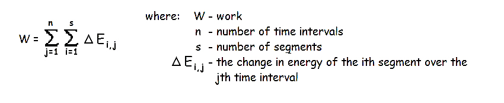

Mechanical Power Flow and Muscular Work
On the previous page, we calculated the power of the thigh segment for Frame 60 of a walking stride by taking the sums of joint powers and muscle powers at the proximal and distal ends. On this page we will interpret the diagnostic information that the powers contain.
Interpretation of Joint Power

Joint
powers are quite easy to interpret. They are simply the rates
of energy being transfered to or from the adjacent segment.
Linked segment systems can do work on each other by virtue of
the connection between them and the joint power is simply the rate of
doing that work. In the example above, we calculated a
joint power at the hip (proximal end) of 48.16 W. This is a
positive value which means that energy is flowing from the pelvis into
the thigh at a rate of 48.16 Joules per second. It also means
that the pelvis is doing work passively on the thigh at a rate of 48.16
Joules per second. Similarly, we also calculated a joint
power at the knee (distal end) of 19.97 W which means that the leg was
passively transfering energy or doing work on the thigh segment.
In each case, the adjacent segments were transferring energy
into the segment, doing positive work and attempting to increase the
energy of the segment. A negative joint power would indicate
a passive transfer of energy out of the segment or an attempt by the
adjacent segment to decrease the energy of the thigh.
The joint powers are passive transfers between the segment and an adjacent segment. A positive joint power indicates a passive flow of power into the segment from the adjacent segment. A negative power indicates a passive flow of power out off the segment to the adjacent segment.
Interpretation of Muscle Power

Muscle powers are more difficult to interpret. At first glance, they are similar to joint powers in which positive values mean that energy is flowing into the segment and negative values mean that energy is flowing out. In the example above, we calculated a muscle power of -19.77 W at the hip (proximal end) which means that the muscles crossing the hip joint were absorbing energy or doing negative work on the thigh segment at a rate of 19.77 Joules per second. We also calculated a muscle power of -4.28 W at the knee (distal end), indicating that the muscles crossing the knee joint were attempting to reduce the energy of the thigh segment by doing negative work or absorbing energy at the rate of 4.28 Joules per second. However, to fully understanding which muscles are active, what their role is, and how much work they are doing, we need to also consider the adjacent segments.
When we look at the leg segment for frame 60, we see that its angular velocity is -2.55 rad/s which means that the -6.4 N.m knee moment results in the muscle power of (-2.55)(-6.4) = 16.32 W. The 6.4 N.m moment at the knee was caused by the knee flexor group of muscles. In this case, the knee flexors were contracting concentrically, transferring 4.28 W of power from the thigh to the leg and doing an additional 12.04 W of power on the leg (4.28 + 12.04 = 16.32).
The following table lists all the possible scenarios of muscle power generation, absorption and transfer.

Muscle Work

The graphs on the right show the knee joint angle, the knee net joint moment and the muscle power during a complete walking stride. From the top graph we see that upon heel contact (HC), the knee flexes to about 55 degrees before extending just prior to toe off (TO). It then flexes and extends during the swing phase before heel contact ends the stride and another begins.
The middle graph shows the net joint moments calculated using linked segment analysis. It can be seen that the knee extensor muscle group is dominant throughout the stance phase with the flexors only working late in the swing phase.
The bottom graph uses the method described in this lecture to calculate the muscle power throughout the walking stride. After heel contact, we can see that the knee extensors have a negative power which indicates an eccentric contraction absorbing energy. The area under the power-time curve indicates the amount of work or change in energy. In this case, the knee extensors perform 53J of negative work. Later in the stance phase, they do 31J of positive work with a small 11J of negative work during early swing. The knee flexors then become dominant absorbing 24 J and then contributing 5J of positive work at the end of swing.
By examining every joint in the human body during this activity, we can get a total amount of positive and negative muscle work performed. This value is quite important when examining the efficiency of human movement which is the topic of a future lecture.
Summary and Limitations:

The method of calculating work by examining segmental changes in energy was presented earlier. It was noted at that time that some illegal transfer of energy between segments could distort the amount of work. Although this method of calculating muscular work is better because the joint power would be zero if no energy is passively transferred between segments. It is also superior from the aspect that the active work is assigned to a muscle group and identified as either an eccentric or concentric contraction.
The muscle power calculation is the product of the segment angular velocity and the net joint moment. We know that the net joint moment is the sum of all tissues crossing the joint and may contain a contribution by ligaments and may have a co-contraction of the antagonist muscles. It is possible that negative work performed to slow a segment near the extended range of motion is done by the passive constraints rather than active muscle contraction. In the case of a co-contraction, the calculation of 31J of positive work in K2 above might possibly be a greater amount of positive work by the knee extensors if the knee flexors were simultaneously performing some negative work.

The existance of two-joint muscles also complicates the situation because a rectus femoris could contract isometrically and transfer energy from the pelvis to the leg (bypassing the thigh segment) and this method would under-estimate the work done by the hip extensors and over-estinate the work done by the knee extensors. For example, the squat exercise could be performed by having the hip extensor perform positive work on the thigh segment and the knee extensors perform positive work on the leg segment. The figure to the right illustrates a squat exercise in which the hip extensor performs all of the work and the two-joint rectus femoris contracts isometrically transferring some of the work performed by the hip extensor to the leg segment. The traditional linked segment analysis would under-estimate the work done by the hip extensor and over-estimate the work performed by the knee extensors. The total work calculation would be correct but the muscles responsible would not be.
An EMG driven model to estimate individual muscle force (see previous lecture) would allow an even better estimate of total work and the roles played by muscles and passive structures.